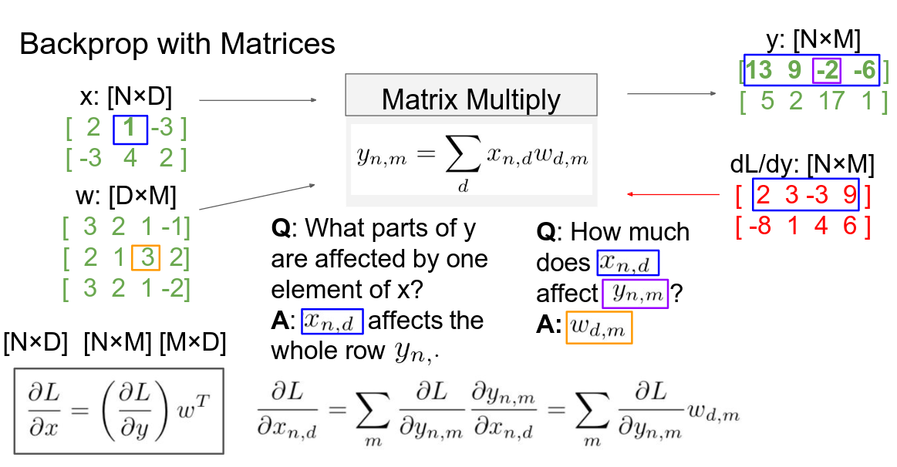

Exams notes
Loss functions
- N is the number of datapoint
- L is the loss computed on the value x against the datapoint y
- W are the weights of the AI
Some functions
- Crossentropy loss:
- Square loss: The normalization factor is, sometimes, used to avoid overfitting.
Softmax
Gradient
Two ways of computing it:
- Numerically: slow, approximate, easy to write
- Analytically: fast, exact, error-prone. In practice, you use the numerical gradient to check the analitycal one.
Learning rate schedule
Sometimes it is useful not to have a fixed learning rate but a variable one. There are several ways to implement it, some are:
- cosine
- linear
- inverse sqrt 
Convolutions
where:
- p is the padding
- s is the stride
- k is the kernel size
Pooling
- overlapping (no stride) -> image of size W with pooling p -> out: W - p + 1
- non overlapping (stride) -> as for convolutions
Spatially separable convolutions
split a kernel of size n into two kernels nx1 and 1xn
Depth-wise separable convolutions
Instead of a convolution of n output channels, compute n convolutions of 1 channel and then sum them together with a 1x1 convolution.
Grouped convolutions
A convolution looks only at a subset of the channels.
ISA extensions
- post increment -> avoids incrementing the loop counter manually using a specialized counter. Works only if the number of iteration is known before starting the loop
- simd (single instruction, multiple data)
- dot product multiplier
Gem-w convolutions
Tiling
Compute the value of an element in a matrix multiplication can be very expensive in terms of memory. Therefore, to better utilize the memory accesses, we can do the operations in blocks.
Multiprocessing
speedup:
Quantization
Use fixed point instead of floating points for real numbers. Normally:
- 16 bit: no loss
- 8 bit: some losses but minimal.
- 4 bit there's a bit of overhead while packing / unpacking the operands
- 1 bit: extreme but useful in some occassions.
Linear quantization
Affine mapping from real numbers to integers.
where:
- r is the real number
- q is the integer number
- z is an integer value
- s is a floating point number range: , s = z = to deal with non-centered distribution activation: we may move the z value towards the middle by subtracting the max value of the activation to the min value, and we can divide by a delta value which is:
- for activations
- for weights
Usually, for the weights, we keep the z value at 0. N is the number of bit representing the numbers and can be:
- fixed per net (fixed precision)
- fixed per layer (mixed precision)
Non-uniform quantization
There are also non-uniform quantization strategies like
- log domain
- wight clustering
Quantization strategies
- post training
- quantization-aware training The latter can increase performance with more aggressive quantization strategies. We can also increment the network quantization to better tune it. To train a quantized network we keep 2 versions of the same weights: the quantized one for inference and the non-quantized one for backpropagation. This is due to the fact that integer numbers are not diferentiable.
Pruning
It's a strategy to save space by removing unused or redundant connections.
- Saliency pruning: prune weights with minimal impact on the functions
- Magnitude pruning: prune based on a threshold value pruning schedule: gradually prune instead of doing it one-shot
Unstructured pruning
prune where needed (slow and, most of the time, can slow down computation)
Structured pruning
- block based: prune based on the underlying structure of the simd instructions
- node based: remove entire nodes (can be done by masking)
Strassen
can be applied recursevly: 7T(N/2) + O() The result is cutting the complexity from to
Winigrad
for convolutions. out = where Z, W and X are transformation. For multiple channels we just sum the results. It can speed things up a lot but each filter size require a different computation.
FFT
we can use fast furier transform and convert both filter and activations to frequency domains.